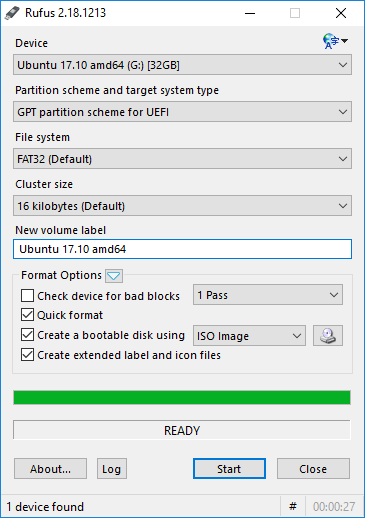

Como criar um pendrive de boot com o Rufus
O que é o Rufus
O Rufus é um programa livre para Windows que grava uma imagem ISO no pendrive, deixando-o pronto para instalar um sistema operacional. Diferente do Ventoy, cada pendrive fica com um sistema por vez, mas o Rufus permite ajustar várias configurações, o que ajuda em computadores antigos. Ele não precisa ser instalado: basta baixar no site oficial rufus.ie e abrir.
O que é necessário
Um pendrive de pelo menos 8 GB, o arquivo ISO do sistema e um computador com Windows. Todo o conteúdo do pendrive será apagado durante a gravação.

Passo a passo no Windows
Em Dispositivo, selecione o pendrive. Em Seleção de boot, clique em SELECIONAR e escolha o arquivo ISO.
Em Esquema de partição, escolha MBR para computadores antigos com BIOS Legacy (com Sistema de destino "BIOS ou UEFI-CSM") ou GPT para computadores com UEFI. Se o esquema estiver errado, o pendrive não aparece no menu de boot. O Sistema de arquivos (a forma de organizar os dados no pendrive, como FAT32 ou NTFS) e o Tamanho do cluster podem ficar como o Rufus sugerir.
Clique em INICIAR. Com ISOs do Windows 11, o Rufus oferece remover a exigência de TPM 2.0 (chip de segurança) e Secure Boot (inicialização segura), permitindo instalar em computadores que oficialmente não seriam compatíveis. Com ISOs de Linux, escolha o modo Imagem ISO (recomendado) ou, se não funcionar, o modo Imagem DD. Espere aparecer "PRONTO".
E no Linux?
O Rufus só funciona no Windows. No Linux, o mesmo resultado é obtido com o Ventoy,
que tem versão para Linux, ou gravando a ISO diretamente com o comando dd ou com o programa
Discos, como explicado em Como criar um pendrive de boot direto com a ISO.
Como iniciar pelo pendrive
Com o pendrive conectado, ligue o computador, aperte a tecla do menu de boot (geralmente F12, F11, F8 ou Esc) e escolha o pendrive. No nosso trabalho, o Rufus também não conseguiu instalar o Windows XP; a solução está na página Erro de boot do Windows XP no Rufus e no Ventoy.